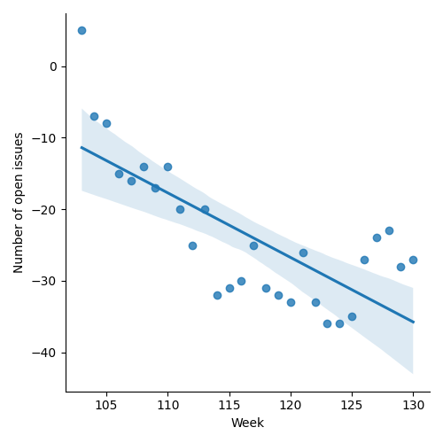
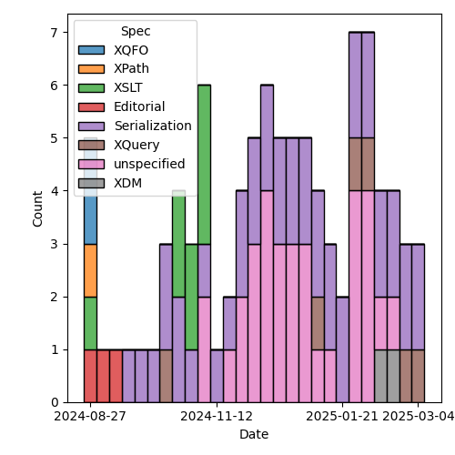
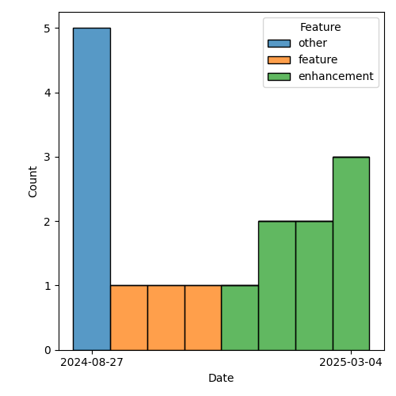

QT4 CG Meeting 113 Minutes 2025-03-11
Meeting index / QT4CG.org / Dashboard / GH Issues / GH Pull Requests
Table of Contents
Minutes
Approved at meeting 114 on 18 March 2025.
Summary of new and continuing actions [0/7]
[ ]QT4CG-082-02: DN to work with NW to come to agreement on the fn:ranks proposal[ ]QT4CG-107-05: JLO and DN to consider a proposal for system defined records.[ ]QT4CG-110-04: JK to consider a PR for #366, xsl:use-package with xsl:package-location[ ]QT4CG-112-01: JLO to propose a concrete example that uses “.” in a ~%method~s.[ ]QT4CG-113-01: MK to make a PR to drop the position callback on fold-left/fold-right[ ]QT4CG-113-02: NW to investigate a way to show extra attributes in the syntax summary.[ ]QT4CG-113-03: JWL to consider shadow attributes and all the other standard attributes on xsl:record.
1. Administrivia
1.1. Roll call [9/13]
Regrets: EP, WP, RD.
[X]David J Birnbaum (DB)[ ]Reece Dunn (RD)[ ]Sasha Firsov (SF) [-0:30][X]Christian Grün (CG)[X]Joel Kalvesmaki (JK)[X]Michael Kay (MK)[X]Juri Leino (JLO)[X]John Lumley (JWL)[X]Dimitre Novatchev (DN)[ ]Wendell Piez (WP)[ ]Ed Porter (EP)[X]Bethan Tovey-Walsh (BTW)[X]Norm Tovey-Walsh (NW). Scribe. Chair.
1.2. Accept the agenda
Proposal: Accept the agenda.
Accepted.
1.2.1. Status so far…
These charts have been adjusted so they reflect the preceding six months of work.

Figure 1: “Burn down” chart on open issues

Figure 2: Open issues by specification

Figure 3: Open issues by type
1.3. Approve minutes of the previous meeting
Proposal: Accept the minutes of the previous meeting.
Accepted.
1.4. Next meeting
The next meeting is scheduled for 18 March 2025.
Note: The QT4CG meeting is scheduled on UK/European civil time. The United States switched to daylight saving time on 9 March 2025, so the meetings of 18 and 25 March will be one hour later there (12:00 EDT, 09:00 PDT) until the UK/Europe also switches (on 30 March 2024).
No regrets heard.
1.5. Review of open action items [4/7]
(Items marked [X] are believed to have been closed via email before this agenda was posted.)
[ ]QT4CG-082-02: DN to work with NW to come to agreement on the fn:ranks proposal[ ]QT4CG-107-05: JLO and DN to consider a proposal for system defined records.[ ]QT4CG-110-04: JK to consider a PR for #366, xsl:use-package with xsl:package-location[ ]QT4CG-112-01: JLO to propose a concrete example that uses “.” in a ~%method~s.
1.6. Review of open pull requests and issues
This section summarizes all of the issues and pull requests that need to be resolved before we can finish. See Technical Agenda below for the focus of this meeting.
1.6.1. Blocked
The following PRs are open but have merge conflicts or comments which suggest they aren’t ready for action.
- PR #1766: 1715 Drop array bound checking
- PR #1735: 1341 Drop $position callback from many functions
- PR #1587: 557 Add fn:binary-resource
- PR #1296: 982 Rewrite of scan-left and scan-right
- PR #1283: 77b Update expressions
- PR #1227: 150 PR resubmission for fn ranks
- PR #1062: 150bis revised proposal for fn:ranks
1.6.2. Substantive PRs
The following substantive PRs were open when this agenda was prepared.
2. Technical agenda
2.1. Review of pull requests
2.1.1. PR #1735: 1341 Drop $position callback from many functions
See PR #1735
Straw poll:
- (a) drop the position callback on fold-left/fold-right
- (b) add the position callback to scan-left/scan-right
- (c) drop the scan-left/scan-right functions entirely
(a): 4 (b): 1 (c): 3
Proposal: drop the position callback on fold-left/fold-right
Accepted.
Proposal: drop the scan-left/scan-right functions entirely
There are some objections.
- DN: I think running totals are a use case for the scan functions. And I have some other use cases.
- NW: Can you send them in email or add them to an appropriate issue or PR?
- JWL: Can the scan-left and scan-right functions be written in XPath?
- CG: Yes, you can use fold-left and fold-right, but it’s a bit more sophisticated use.
- JWL: Okay, but if it’s an uncommon requirement, that might be okay.
- CG: I think we need some reasonably intuitive use case for scan-right. And
we’d need to add the array equivalents as well.
- … Do we really want four functions for this feature?
- DN: I’m happy to make a PR. We have both sequences and arrays, but it’s not specific to the scan functions.
- MK: I think we need to start to become a bit more disciplinarian about
proposals for things that don’t have any test cases.
- … I think we need to move to a position where we don’t accept things without test cases.
- DN: Can the examples be made tests?
- MK: Yes, but test cases need to cover all the edge cases, where the examples don’t.
- JLO: Could we reach out to the broader community to find out if the scan functions are needed?
- CG: We’ve had a scan function for maybe ten years, but I’ve never seen anyone
use it. But maybe they would if it had been in the main spec.
- … But the right version has never been used.
ACTION QT4CG-113-01: MK to make a PR to drop the position callback on fold-left/fold-right
2.1.2. PR #1740: 1725b Further elaboration of duplicates handling in maps
See PR #1740
- MK: This is an attempt to make duplicate handling more consistent. Thanks to CG or one of his users for the recommendation.
- MK: We now have an options map on
fn:map-buildwith a combine option.- … There are some string options, or you can provide a function to do it.
- … So three functions in F&O
- MK: In XSLT, there are a few similar changes.
- …
on-duplicatesbecomesduplicates - … Similar changes and a few other corrections.
- …
- DN: I think a “drop-both” keys option would also be useful.
- … If we have two sets, we can have union, difference, or the symmetric difference
- MK: It’s a bit harder to integrate, but it could be made one of the text options.
- NW: DN, can you make an issue for that?
- JLO: Isn’t that just a function that returns the empty sequence?
- MK: No that would give you the empty sequence as the value, not remove the key!
Some discussion of the semantics of the function and why “drop-both” can’t be implemented with the function.
- DN: If the function had different results: accept-first, accept-last, combine, or drop-both, that would work.
- MK: Let’s park that as a new suggestion.
Proposal: Accept this PR.
Accepted.
2.1.3. PR #1778: 1456 Lookup expressions filtered by type
See PR #1778
- MK: I abandoned #1778 and made a new PR to work around some merge conflicts.
See PR #1864
- MK introduces the PR.
- MK: Most of the use cases I’ve seen are where you want to select a record type.
- …
KeySpecifiernow allows aTypeSpecifier - … The reason for using the tilde syntax is that the longer form becomes very unwieldy in more realistic examples.
- … Generally, if you’re processing deep selection into JSON structures, the way that you select which things you’re interested in, unlike XML you don’t have a name, you identify them by content instead: “all the records that have a ‘to’ and ‘distant’ field”, for example.
- … Or refer to it by name if it has one.
- …
- DN: I think the ~ symbol is makes the syntax even more cryptic.
- … I propose that we don’t use a symbol for this, we can have a function “of-type” that very clearly shows what is being done.
- … Also, ~ typically means “approximately the same”.
- … If we accept this PR, then we will have the problem of not being able to distinguish between empty sequence values and a missing value.
- MK: The second point is completely orthogonal. This PR doesn’t change that at all.
- .. The choice of symbol is constrained by the fact that we can’t have an
NCName after the question mark because that selects a field of the map. We
have to have some syntax there that isn’t currently allowed, that’s why I
chose a new symbol. I think we could extend the use of ~ to mean an
instance of operation and I find it a good choice of symbol. It’s a bit like
“@” for attributes in that “~” and type have some phonological connection.
- … ~ has a very wide range of uses; saying it’s a kind of “x” is certainly one of those uses.
- .. The choice of symbol is constrained by the fact that we can’t have an
NCName after the question mark because that selects a field of the map. We
have to have some syntax there that isn’t currently allowed, that’s why I
chose a new symbol. I think we could extend the use of ~ to mean an
instance of operation and I find it a good choice of symbol. It’s a bit like
“@” for attributes in that “~” and type have some phonological connection.
- JWL: Are we allowed to have a record type who’s name is “record”? Wouldn’t that introduce an ambiguity, potentially?
- MK: Is this specifically related to ~?
- JWL: Yes.
Some further discussion of the various flavors of ambiguity that might or might not be ambiguous here. Scribe concludes “probably not.”
- JLO: I think these are valid points; I like this, but there was a “pairs” thing in some of the examples.
- MK: Yes, the modifier, ::.
- … But this is logically part of the key specifier, not part of the modifier.
- JLO: I don’t have a big problem with ~, but it would be nice to have something more explicit.
- … What happens if I select a thing that has additional attributes?
- … If it’s not a named record?
- MK: Only if you specify
, *. - JLO: Yes, then I really like it.
- DN: If we can’t use a name, and I’m not convinced we can’t, but having a single character to specify this is very error prone. I’d prefer to have something longer and more visible, perhaps three *. I like that better than ~.
- MK: I sort of feel like the more punctuation characters you have there, the more likely users are to get them wrong.
- DN: It’s very unlikely for someone to type three * if they didn’t mean that. It’s very visual.
- MK: Unfortunately, “*” is grossly overloaded already.
- MK: I’ve gone around in circles a lot of times to find a better syntax. I’ve tried lots of things and they either raised ambiguities or were confusing.
- JK: I support ~, I find it clear and I have the opposite reaction to DN.
Proposal: Accept this PR.
Accepted.
2.1.4. PR #1858: Initial xsl:record
See PR #1858
JWL introduces the PR.
- JWL: This is basically a shortcut for forming up a map.
- … There are two attributes in the xsl: namespace, we’ll come back to that.
- … xsl:record basically takes attributes that form the map.
JWL walks through an example.
- JWL: It only works when the keys (attributes) are xs:NCNames.
- … The values are evaluated as expressions.
- … We can define xsl:record in terms of a source transformation.
- … The problem is the xsl: qualified names.
JWL outlines the problem with “as” and “duplicates”: are the controls for the map or are they entries?
- JWL: One option might be to put the options in a special child in the xsl:record.
- … Note that
duplicatesis only necessary if you have a sequence constructor.
- … Note that
- NW: I was enthusiastic, but my enthusiasm crashed on the attributes.
- MK: I think we need something to describe extra attributes in the syntax summary.
ACTION QT4CG-113-02: NW to investigate a way to show extra attributes in the syntax summary.
- MK: I think we should say the values are coerced.
- MK: I think we should go either with a child element or the namespace qualified names.
- JWL: That’s almost as ugly.
- MK: Probably need to say something about shadow attributes. Simplest thing is to say there aren’t any.
ACTION QT4CG-113-03: JWL to consider shadow attributes and all the other standard attributes on xsl:record.
- JK: My initial question was going to ask how this hooks up with named records.
- JLO: Two questions, why is the xsl:as defaulted to map, what else would it be?
- JWL: Well it might be a named item type…
- JLO: For duplicates, what does ‘expression’ mean?
- JWL: The default will be an expression or one of a set of strings. The default
is a function that throws an error. It’s exactly the same as on
fn:map-mergeetc. - JK: It’s worth mentioning that you may need some words about type conversion.
JWL will revise for next time.
3. Any other business
None heard.